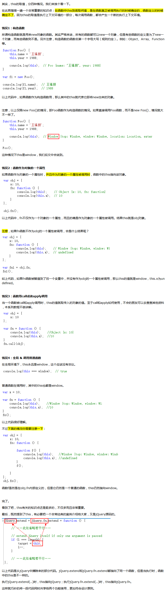

普通函数的this是由动态作用域决定，它总指向于它的直接调用者。具体可以分为以下四项：
箭头函数是没有绑定自己的this，函数内使用的this是由静态作用域（也成为词法作用域，参考this）决定。静态作用域就是说箭头函数里this是由定义它的代码决定，而不是执行调用箭头函数的代码。
上面的说法有时很难理解，我自己总结的方法是：找出定义箭头函数的上下文（即包含箭头函数最近的函数或者对象），那么上下文所处的父上下文即为this。

$(this).html(); //.html()是jquery方法
this.innerHTML(); //.innerHTML()是JS方法
$("img").each(function(index){
alert($(this)); //弹出的结果是: jquery对象[object Object ]
alert(this); //弹出来的是: JS对象[object HTMLImageElement]
}
$("#textbox").click(function(){
//错误写法
$(this).title ＝ "Test";
//正确写法
this.title = "Test";
$(this).attr('title', 'OK');
});